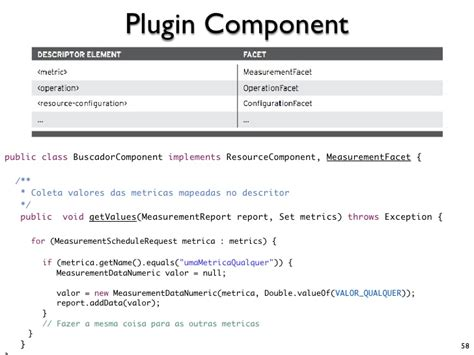
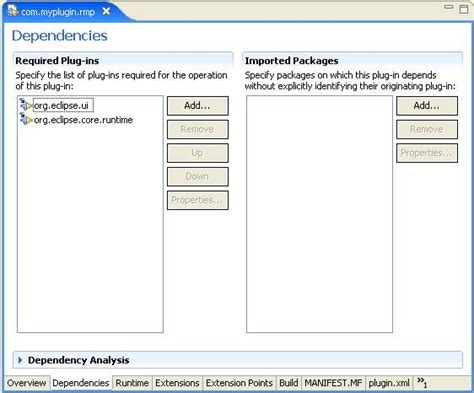

+1280 × 720
+1280 × 720
+1349 × 960
+563 × 469
+561 × 464
+1117 × 899
+1366 × 768
+1280 × 720
+638 × 452
+500 × 500

+728 × 546
+638 × 479
+1024 × 2387
+621 × 448
+728 × 588
+1280 × 720
+638 × 452
+969 × 768
+638 × 826
+718 × 403
+1232 × 1406
+728 × 546
+728 × 546
+370 × 300
+1000 × 945
+1280 × 720
+512 × 512
+728 × 546
+600 × 480
+483 × 615
+960 × 540
+1024 × 768
+1349 × 874
+573 × 425
+638 × 359
+1152 × 864
+728 × 546
+1312 × 984
+500 × 2359
+728 × 546
+642 × 423
+620 × 726
+1136 × 951
+1349 × 878
+1280 × 774
+719 × 510
+562 × 468
+638 × 479
+562 × 467
+560 × 458
+638 × 479
+286 × 343
+1200 × 733

+562 × 466
+1923 × 2286
+1738 × 1018
+728 × 546
+1540 × 816
+548 × 709
+500 × 500
+728 × 546
+638 × 479
+638 × 452
+638 × 452
+244 × 248
+638 × 479
+638 × 479
+638 × 359
+728 × 515
+728 × 546
+489 × 553
+250 × 250
+400 × 400
+728 × 546
+728 × 546
+600 × 311
+450 × 389
+1152 × 866
+975 × 568
+806 × 544
+861 × 451
+638 × 359
+1680 × 2010


{kind=link}
Development - ImageJYour browser indicates if you've visited this link
This page provides an overview of ImageJ from the perspective of software development: how to use it from your programs, as well as how to modify or extend its capabilities via plugins.
Developing Plugins for ImageJ 1.x - ImageJYour browser indicates if you've visited this link
Developing Plugins for ImageJ 1.x. ... or image format loaders) A filter plugin looks like this: ... All plugin development tends to follow a consistent "Design ...
wordpress plugin development - using images - Stack OverflowYour browser indicates if you've visited this link
I'm writing a plugin for wordpress and am having trouble with images. If I have my plugin in wp-content/plugins/my-plugin/ and in there, a folder images/test.png - how do I reference that image in my
How Plugin Developers Should Manage Image Assets - TorqueYour browser indicates if you've visited this link
Plugin developers should use assets like a banner image, screenshots and icon, to show off their plugin in search results. Here's how to set that up.
ImageJ plugin development and NetBeans IDE - Stack OverflowYour browser indicates if you've visited this link
Can you help me to setup the ImageJ plugin development with NetBeans IDE? I tried with existing project, but there is two problem's: - Java Free form porject: i cannot attach the onvif.xsd in this
PDF Writing ImageJ PlugIns - A TutorialYour browser indicates if you've visited this link
For the development of plugins you need ImageJ and ... static int NO_IMAGE_REQUIRED The plugin filter does not require ... 2000 Writing ImageJ PlugIns - A Tutorial 6
Introduction to Plugin Development | Plugin Developer ...Your browser indicates if you've visited this link
Introduction to Plugin Development. Welcome to the Plugin Developer Handbook. Whether you're writing your first plugin or your fiftieth, we hope this resource helps you write the best plugin possible.
Developers - Image-LineYour browser indicates if you've visited this link
SDK / API libraries for developers creating plugins for FL Studio.
Plug-in Development Overview - Plugins | MDNYour browser indicates if you've visited this link
Plug-in Development Overview ... but make sure that you have the necessary files from the plugin SDK. ... (such as application or image) and a minor type, for ...
10 Great Image Management Plugins - dummiesYour browser indicates if you've visited this link
The ten plugins discussed here address one or more of your image management needs. All have thousands of users, great reviews, regular updates, and are easy to install.
Getting Started with WordPress Plugin Development - WPMU DEVYour browser indicates if you've visited this link
While this post provides a great guide to getting started with plugin development, ... excerpt, image, etc of the current post I used template tags.
PDF Plugin Development for Dynamics 365 - It Ain't BoringYour browser indicates if you've visited this link
Plugin Development for Dynamics 365 by Alex Shlega ... 36.3 You are adding a Pre Image to the step using the Plugin Registration Tool, and you are getting
Plug-in development - msdn.microsoft.comYour browser indicates if you've visited this link
Plug-in development. Introduction to the event framework. Supported messages and entities for plug-ins. Plug-in development. Write a plug-in. Understand ...
PDF Writing ImageJ Plugins—A TutorialYour browser indicates if you've visited this link
4 Image Representation in ImageJ 14 ... plugins in ImageJ and its onboard tools for plugin development. It starts with the discussion
WordPress Plugin Development for Beginners — SitePointYour browser indicates if you've visited this link
WordPress plugins are a critical component of the WordPress platform, allowing you to easily extend functionality. A common question I often get asked is "What's the best resource that covers WordPress plugin development for beginners?". Luckily, there's a vast amount of high quality ...
OsiriX Development GuideYour browser indicates if you've visited this link
Welcome to the OsiriX development Guide. ... A blog about plugin development: ... your plug-in will appear in the 'Image Filters' menu;
How Your Plugin Assets Work | Plugin Developer Handbook ...Your browser indicates if you've visited this link
How Your Plugin Assets Work. ... The assets folder in your plugin is where you can store images (like ... you see at the top of a plugin page: For development and ...
WordPress: Plugin Development - LinkedInYour browser indicates if you've visited this link
Learn how to build, extend, and distribute your own WordPress plugins with the WordPress API and PHP.
Getting Started Tutorial - Google ChromeYour browser indicates if you've visited this link
Extension components are created with web development technologies: ... Download the images folder here, unzip it, and place it in the extension's directory.
Introduction to NopCommerce Plugin Development | PluralsightYour browser indicates if you've visited this link
In this course we will build a compelling plugin from start to finish and examine common development ... Introduction to NopCommerce Plugin ... Image Processing with ...
WordPress Development & Customization - WebCodingPlaceYour browser indicates if you've visited this link
We are here to reduce the cost and provide you the best custom solutions for wordpress themes and plugins according to wordpress standards.
WordPress Plugin Development - Build 14 Plugins | UdemyYour browser indicates if you've visited this link
WordPress Plugin Development - Build 14 Plugins ... This plugin will always display the featured image regardless of what the theme is doing.
TinyMCE | Create a Plugin for TinyMCEYour browser indicates if you've visited this link
Image Tools; Custom Formats; ... Create a Plugin for TinyMCE ... The build scripts that comes with the development package of TinyMCE will automatically build all ...
Fully responsive image plugin for wordpress - GitHubYour browser indicates if you've visited this link
More than 28 million people use GitHub to ... Just install the plugin and enjoy automatic responsive images! For Theme Developers. This plugin includes several ...
Animated Images - Plugin Developer's Central - paint.net ForumYour browser indicates if you've visited this link
Plugin Developer's Central ; Animated Images Sign in to follow this . Followers 3. Animated Images. By midora, March 12, 2015 in Plugin Developer's Central.
Image Processing with ImageJ | PACKT BooksYour browser indicates if you've visited this link
Get familiar with one of the world's most highly regarded Digital Image ... Image Processing with ImageJ is a practical book ... the plugin development ...
Writing a Plugin « WordPress CodexYour browser indicates if you've visited this link
There is a comprehensive list of articles and resources for Plugin developers in ... image files and language files ... For instance, a Plugin that adds geographical ...
ImageJ - ImageJ netbeans plugin development...Your browser indicates if you've visited this link
ImageJ netbeans plugin development... PLease give me a link or a little help how can i set my netbeans to develope imagej plugin. i made it in eclipse but now i have to do it in netbeans...i can't...
Eclipse IDE Plug-in Development: Plug-ins, Features, Update ...Your browser indicates if you've visited this link
Eclipse IDE Plug-in Development: ... You can check the current setting in your plugin.xml file on the Extensions tab and ... import org.eclipse.swt.graphics.Image; ...
Do more with Creative Cloud. - Adobe ExchangeYour browser indicates if you've visited this link
Very simple add-on to reduce noise of you digital image . ... verify and caption/subtitle your media with Trint's automated transcription plugin for Premiere Pro CC ...